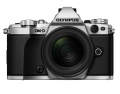

器材库 > APS及其以下画幅可换镜头数码相机 > OM-D E-M5 Mark II

规格总览
产品类型
4/3画幅可换镜头数码相机
发布日期
2015-02-05
影像规格
影像传感器
Live MOS
影像传感器尺寸
17.3 mm（H）x13.0 mm（V）
总像素
约1720/ 1.33（4:3）万
有效像素
约1610万
最大解像度
4000万像素
静态图像尺寸
[RAW] 4608x3456像素 [JPEG] 4608x3456像素 - 640x480像素
静态图像格式
JPEG, RAW, RAW+JPEG, MPO
静态图像质量
RAW：4608（H）x3456（V）（约1/1.5无损压缩） 约17MB
短片尺寸
〔MOV〕1920x1080（全高清） / 30p、25p、24p / ALL-I （A-I）、IPB（SF、F、N），1920x1080（全高清） / 60p、50p / IPB（SF、F、N）
短片格式
AVI, MPEG4-AVC/H.264
防抖系统
内置 (适用于静态&摄像的传感器防抖, 5-轴机身防抖系统)
除尘系统
超声波除尘（图像传感器除尘系统）
镜头和对焦
镜头卡口
4/3
兼容镜头
微型三分之四系统镜头
对焦点
81区多点自动对焦
AF辅助灯
有
手动对焦
支持
曝光控制
测光模式
中央重点测光, 点测光, ESP
测光范围
EV -2 - 20（使用17mm f2.8，ISO 100等效）EV
快门类型
电子控制焦平面快门
快门速度
1/8000 - 60秒
闪光同步速度
1/250秒
曝光补偿
±5EV以EV档调整可选（1/3、1/2、1）EV级调整
自动曝光锁
有
ISO感光度
100, 25600
连拍
约10.0张/秒 * 防抖关闭。 * 焦距和曝光以第1张照片为准。
闪光灯
内置闪光灯
弹出式
闪光指数
GN＝9.1（ISO100・m）
取景器/显示屏
取景器
EVF电子取景器
取景范围
100%
取景放大倍率
约1.30倍*1 - 1.48倍*2（-1m-1，50mm镜头，无穷远） *1：显示类型1、2（画幅比例4:3） *2：显示类型3（画幅比例4:3）倍
屈光度调节范围
-4 - +2m-1
景深预视
有
LCD尺寸
3.0英寸
LCD像素
103.7万
视野率
100%
LCD特性
触摸屏, 翻转屏
Live View
有
文件输入/输出
存储卡
SD/SDHC, SDXC, Eye-Fi
数据接口
USB2.0
视频/音频接口
HDMI 输出
无线功能
Wi-Fi
电源
电池
BLN-1锂电池
续航能力
约310张（使用 BLN-1和TOSHIBA SD卡，防抖打开，根据CIPA测试标准） 约750张（使用 BLN-1和TOSHIBA SD卡，防抖打开，快速睡眠模式打开，基于奥林巴斯根据CIPA测试标准进行测试所得结果）
机身规格
颜色
银色, 黑色
尺寸
123.7（W）×85（H）×44.5（D）mm
重量
约417g [仅机身]g
其它
工作温度
0 - 40℃
工作湿度
30 - 90%
书香门第2016-04-01 16:394.56 分
操作性 3.00功能性 5.00美观性 5.00趣味性 5.00耐用性 5.00性价比 4.00解像力 4.50色彩还原 5.00
promise3232016-01-20 23:264.44 分
操作性 5.00功能性 5.00美观性 5.00趣味性 5.00耐用性 5.00性价比 3.00解像力 3.50色彩还原 4.00
书香门第2015-11-05 14:46
leiden2015-04-03 07:21
产品图 / 样片
评测 / 相关文章
- 详细内容 （存档）
- 另辟蹊径 奥林巴斯E-M5 Mark II评测 （存档）
- ［试用］奥林巴斯E-M5II样张赏析 （存档）
- ［资讯］奥林巴斯OM-D E-M5 Mark II开箱 （存档）